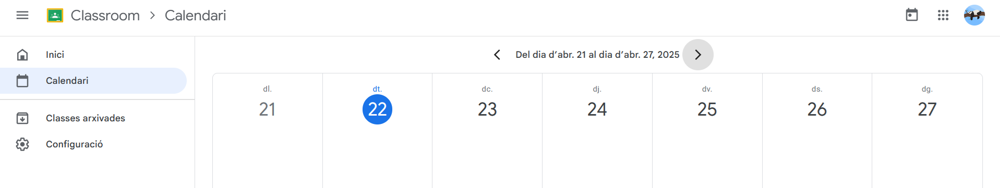

A la hora de asignar faltas de asistencia, ausencias y el horario, al aplicarlo a papel, aparte de que gastas material, a la hora de hacer actualizaciones o implementar los datos es mucho más tedioso y lento que hacerlo de manera digital.
Problema
Propuestas
Excel
Hemos pensado en realizar una hoja excel para cada profesor, este contendrá un cálculo de faltas y retrasos los cuales se calcularán mediante un porcentaje.
Si supera el 9% el color será amarillo.
Si supera el 17% el color será rojo.
Después, se implementarán todos los datos en una BBDD u otros ficheros dónde guardarán todos los datos de todos los alumnos y se podrán analizar los datos de manera sencilla y rápida .
Método para fichar
Por otro lado, podemos implementar un método mucho más rápido y sin gastar tiempo en pasar lista.
Este consiste en un dispositivo que se implementa en cada puerta de cada clase dónde escanea la tarjeta que se le dan a los alumnos y profesores. El dispositivo lee la tarjeta y busca en la Base de datos si está, si está mirará la hora actual y la comparará con la de llegada, si pasa la hora establecida 5 minutos, obtendrá un retraso, si pasa de 10 minutos, obtendrá una falta. Todo ello se implementará en una Base de datos o un Excel dónde se guardarán todos los registros.
Google Calendar
La utilización de un calendario compartido dónde se aplicarán todas las clases y sus respectivas horas es un buen método para la digitalización de él.
Le podemos aplicar permisos a todos los usuarios (que serán los correos de los alumnos) al calendario específico. De esta manera sabrán todo lo que toca a cierta hora sólo conectándose al Google Calendar.

Classroom
La implementación del Classroom o un software propio de la escuela sería ideal para la realización de un calendario digital.
Se aplicarán todas las clases en esa aplicación y las diferentes tareas que se presenten serán reflejadas en ese calendario.
¿Qué queremos conseguir?
Que los datos sean más eficientes y rápidos de encontrar. Al organizar datos se hace más ameno y puedes acceder desde cualquier dispositivo que contenga permisos.
¿Cuando se harán las acciones?
Se realizarán cuando el profesorado que se encargue del calendario finalice con sus programas, de esta manera sólo hará falta que lo suba a Google Calendar. Cuando las clases comiencen, se les dará acceso a los alumnos al calendario sin poder editarlo.
También, aplicarán todas las tareas por el Classroom después de implementar el calendario (si no tienen otro software) para que en el propio calendario de la app sepan que tareas previstas tienen.
Cuando ya obtengan toda la información necesaria de los alumnos, iremos con el Excel. Lo implementaremos al empezar la primera clase así podemos comprobar si la lista está bien asignada.
En él, está aplicado un máximo de 90 días, que equivale a 3 meses, que equivale a 1 trimestre. Si prefieren más días o menos, se deberá de añadir celdas, copiar pegar las que ya existen y modificar la fórmula.
=(CONTAR.SI(D5:CO5;"F") + (CONTAR.SI(D5:CO5;"R")/2))/90
90 -> Son los días.
Por otro lado, tenemos el método para fichar. Deberemos de implementar este método una vez realizado toda la Base de datos y un fichero u otro método para guardar los datos. Después, aplicaremos dispositivos para fichar en las puertas de las clases.
Hay que tener en cuenta que debemos de contener un presupuesto elevado.

Recursos necesarios
Microsoft Office 365 - Excel
Cuenta de correo - Google calendar y Classroom
Cuentas de correo de pruebas - Google calendar y Classroom
Cuentas de Microsoft - Excel
Dispositivo para fichar
Programa de Base de datos
Responsables
Técnico informático - Dispositivo para fichar, Base de datos, Excel
Docente - Classroom
Administrativos - Gestión de cuentas de correo y alumnos
Electricista - Organización del dispositivo para fichar y diferentes dispositivos